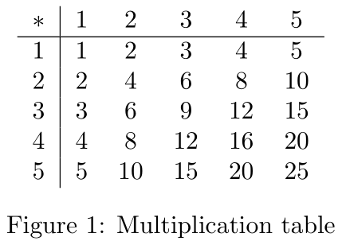
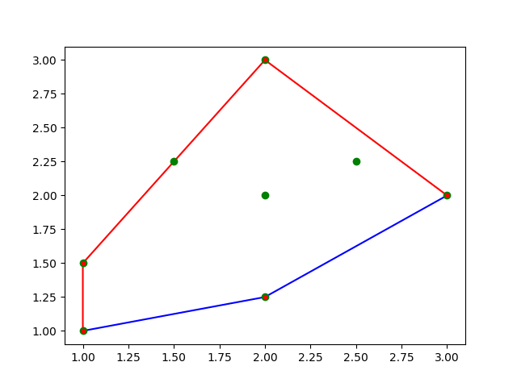
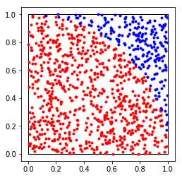
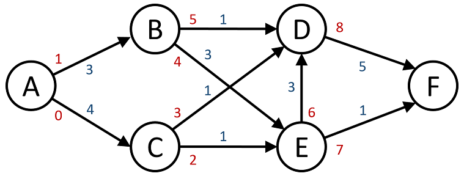
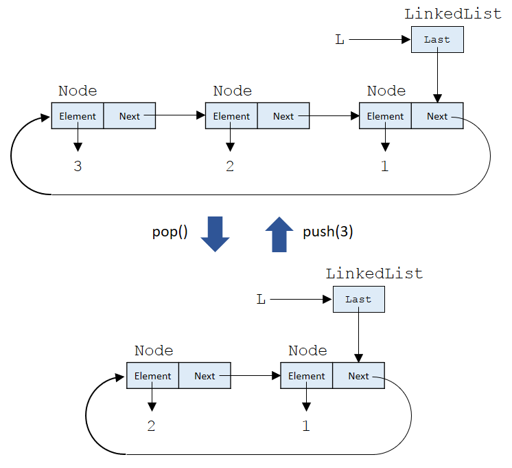
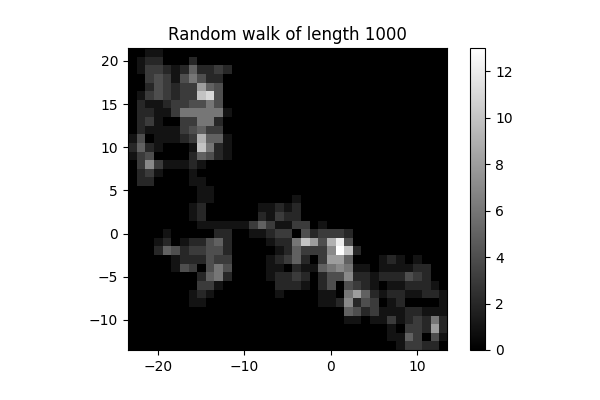
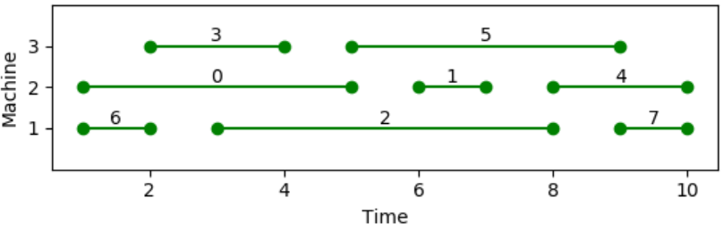
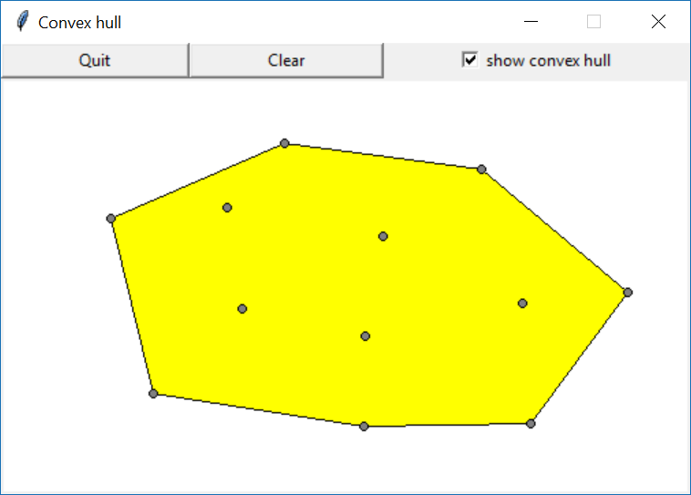

1 introduction 2 python basics and control structures 3 operations 4 lists 5 tuples and lists 6 dictionaries and sets 7 functions 8 recursion 9 recursion and iteration 10 functions as objects 11 object oriented programming 12 class hierarchies 13 exceptions and file input/output 14 documentation, testing and debugging 15 decorators 16 dynamic programming 17 visualization and optimization 18 multi-dimensional data 19 linear programming 20 generators, iterators, and context managers 21 modules and packages 22 working with text 23 relational data 24 clustering 25 graphical user interfaces, gui 26 java vs python 27 course evaluation
Some exercises are marked with one or more *s to indicate that these exercises are harder than others.
Go to "Course Tools > Groups" on the course page on Brightspace and register your Exercise class. This is required, so that the teaching assistants know which handins to correct.
On the same page register your Handin group. You cannot handin your assignments before you have registered for a handin group. Note that each group name has the format Handing group number.
(Optional) On the course webpage visit the "Activity Tools > Discussions", and subscribe to the different forums and topics to get notifications when there are new postings.
Install the most recent version of Python 3 from python.org. See Installing Python in the course menu for more information.
Create a shared online folder for your exercise class ("TØ hold"), where you can share your solutions to the exercises presented during the exercise classes. Aarhus University provides OneDrive and Brightspace for this purpose.
Create a program that asks the user for two numbers and then prints their sum.
Hint. Use the function input. Recall that the function input returns a str.
Create a program that adds a user specified number of numbers. The program should first ask the user for a number k, then ask the user for the k numbers to add, and finally print the sum of the k numbers.
Hint. Use a while-loop.
Write a program that determines if two intervals [a, b] and [c, d] overlap, where a ≤ b and c ≤ d. The program should ask the user for the four end-points a, b, c and d of the two intervals, and print if the two intervals overlap or not. If the two intervals overlap, the program should print the interval where the two input intervals overlap.
Hint. Use one or more if-statements.
Examples:
[2, 4] and [6, 9] do not overlap
[5, 7] and [1, 3] do not overlap
[4, 8] and [-6, 2] do not overlap
[2, 5] and [3, 9] overlap in the interval [3, 5]
[3, 6] and [1, 3] overlap in the interval [3, 3]
[1, 8] and [2, 6] overlap in the interval [2, 6]
Consider the following program for finding the integer square root of a non-negative integer:
x = int(input('x: '))
low = 0
high = x + 1
while True: # low <= sqrt(x) < high
if low + 1 == high:
break
mid = (high + low) // 2
if mid * mid <= x:
low = mid
continue
high = mid
print(low) # low = floor(sqrt(x))
Walk through and understand the program.
Try to simplify the program, getting rid of the break and continue statements.
Write a naive program that tests if a small number x ≥ 2 is a prime number.
Recall that a number is a prime number if and only if the only numbers dividing the number is 1 and the number itself, like the numbers 2, 3, 5, 7, 11, 13...
The program should ask the user for the number x and print wheter the number is a prime or not. If x is not a prime, it should print a divisor/factor in the range [2, x - 1].
Hint. Try all relevant factors. Use the % operator to compute the remainder by integer division, e.g. 13 % 5 == 3.
Write a program that, given a positive integer x, prints the prime factors of that number. Recall that any positive number has a unique prime factorization, e.g. 126 = 2 * 3 * 3 * 7.
The program should ask the user for the integer x, and then print each prime factor. Note that for x = 126, the prime factor 3 should be printed two times.
Hint. Repeatedly divide x by 2 until 2 is not a prime factor any longer. Repeat the same for 3, 4, 5,... Note that 4 = 2 * 2 is not a prime number. But since its prime factors cannot be divisors of x divided by the prime factors found so far, then we will not find 4 (and any other composite number) as a prime divisor of x.
Use the Newton-Raphson method to compute the square root of a float n ≥ 1.0, by finding a root of the function f(x) = x2 - n and letting your initial approximation of the root be x = n. Recall f'(x) = 2 * x. In your computaions you can use +, -, *, and /.
You can compare your result to the result of the builtin sqrt function in the math module using:
import math
print(math.sqrt(n))
Write a program to compute how many months it takes to pay down a loan, that has a fixed monthly interest rate, and the borrower makes a fixed monthly payment. The program should ask the user for three values: The size of the initial loan, the monthly interest rate in percent, and the size of the monthly payment of the borrower. The program should output for each month the size of the remaining loan.
Handin format. The handin should consist of a single Python file, e.g. handin1.py. The files should start with a Python docstring (string in triple quotes, """ or ''') containing the study ids and names of the students who made the handin. A handin group consists of 1-3 students. Furthermore the docstring must contain a short reflection (5-10 lines) on your solution to the exercise. This could be a short discussion of the design choices you made during your implementation, the problems you encountered, what were the hard and easy parts to get your solution to work, what restrictions on the user input did you make, limitations in your implementation, what language features were particularly useful, ... A template for the handin is below. The filename of a submission must contain the names of all group members and their study id.
'''
HANDIN 1 (down payment)
This handin is done by (study ids and names of up to three students):
201500000 student name
201600000 student name
201400000 student name
Reflection upon solution:
Reflection on your solution (5-10 lines), e.g. implementation
decisions, hard/easy parts, input restrictions, limitations, ...
'''
loan_input = input('Initial loan: ')
...
Consider the below code. Run the code and explain the output.
from math import pi
print('A string: "%s"' % 'Hello World')
print('An integer: %s' % 27)
print('A float: %s' % 27.0)
print('A float: %s' % pi)
print('A float: %s' % pi * 2)
print('A float: %s' % (pi * 2))
print('A float: %.2f' % pi)
print('A float: [%5.2f]' % pi)
print('A float: [%+6.2f]' % pi)
print('A float: [%+.2f]' % pi)
print('A float: [%08.2f]' % pi)
print('An integer: [%08d]' % 42)
Hint. See pyformat.info for examples of string formatting.
Consider the below code. Run the code and explain the output.
a = [[1, 2], [3, 4]]
b = a
c = a[:]
b[0] = [5, 6]
c[1][1] = 7
print(a, b, c)
Hint. Try to use www.pythontutor.com.
Run the below code and explain what is happing.
a = [42]
a[0] = a
print(a)
Hint. Try to use www.pythontutor.com.
Run the below code and explain what is happing.
x = [0, 7]
x[0] = x
print(x)
print(x[1])
print(x[0][1])
print(x[0][0][1])
print(x[0][0][0][1])
print(x[0][0][0][0][1])
print(x[0][0][0][0][0][1])
Hint. Try to use www.pythontutor.com.
Run the below code and explain what is happing. What notations ismost intuitive and consistent?
list(range(4, 9))
list(range(9, 4, -1))
list(range(8, 3, -1))
list(range(4, 9)[::-1])
Hint. Try to use www.pythontutor.com.
The expression range(x, y, z)[i:j:k] returns a new range(a, b, c).
Note that z and k can be negative, but not zero.
E.g. range(3, 18, 2)[5:2:-2] returns range(13, 7, -4).
Write a program that given integers x, y, z, i, j and k computes a, b and c. The program is not allowed to create a range explicitly, like the below.
r = range(x, y, z)[i:j:k]
a = r.start
b = r.stop
c = r.step
Start with the simple case where you assume all indexes are non-negative.
Note. To automatically test your code on random input, you can use the below code. Set -100 to 0 for the simple case.
import random
while True:
x, y, z, i, j, k = [random.randint(-100, 100) for _ in range(6)]
if z == 0 or k == 0: # skip illegal input
continue
r = range(x, y, z)[i:j:k]
# insert your code here
print('range(%s,%s,%s)[%s:%s:%s] =' % (x, y, z, i, j, k), r)
if r != range(a, b, c):
print('Wrong range: a b c =', a, b, c)
break
Warning. This exercise is hard to get correct for all types of input, in particular for negative values of z and k. This exercises forces you to get a detailed understanding of what slicing a range means. Note that two ranges are considered equal if they represent the same sequence of numbers, e.g. range(2, 5, 4) == range(2, 5, 3) since they both represent a sequence only containing the number 2.
Print a multiplication table of a given dimension. Below is shown the multiplication table for dimension 7. The program should ask the user to input the dimension of the table (≤ 100), and then print a multiplication table where all entries in a column are right aligned.
* | 0 1 2 3 4 5 6 7
-----------------------------
0 | 0 0 0 0 0 0 0 0
1 | 0 1 2 3 4 5 6 7
2 | 0 2 4 6 8 10 12 14
3 | 0 3 6 9 12 15 18 21
4 | 0 4 8 12 16 20 24 28
5 | 0 5 10 15 20 25 30 35
6 | 0 6 12 18 24 30 36 42
7 | 0 7 14 21 28 35 42 49
Note. This is an exercise in for-loops and string formatting, see pyformat.info.
(Optional) If you are familiar with LaTeX, output LaTeX source code for a mulitplication table of a given dimension that can be translated using e.g. Overleaf into a PDF figure like the below. Example output for dimension five multiplication.tex.

Make a program that given a list L of intervals with possible overlaps, where an interval is represented by a list [left endpoint, right endpoint ], computes a new list L_ of disjoint intervals but with identical union.
E.g. for L = [[1, 3], [6, 10], [2, 5], [8, 13]] the program should compute L_ = [[1, 5], [6, 13]]. It is fine to let L be a constant in the program.
Hint. Start by sorting the intervals using the builtin function sorted, and then process the intervals with respect to increasing left endpoint.
ORICD (Open Researcher and Contributor ID) assigns to researches a unique identifier, e.g. the ORCID of Stephen Hawkings is 0000-0002-9079-593X. An identifier consists of four blocks of digits, except for the last character in the last block that can also be X representing the value 10. The blocks are separated by the character -. The last digit in an ORCID is a checksum value, and a valid ORCID x0x1x2x3-x4x5x6x7-x8x9x10x11-x12x13x14x15 must satisfy:
(x0 * 215 + x1 * 214 + ··· + x14 * 21 + x15 * 20) mod 11 = 1
Write a program that asks for an ORCID, and checks if it is a valid ORCID, i.e. checks if the length, format, and checksum are correct.
Hint. You can use the string method isdigit() to test if a string is a digit, e.g. '7'.isdigit() returns True.
Write a program that given a long string (say order 1.000.000 characters), computes all palindromic substrings of length ≥ 7, i.e. substrings spelled identical read forwards and backwards. You can use the below code to read a complete text from a file to a string, convert it to lower case, and remove everything except letters and digits.
The file saxo.txt is a local copy http://www.gutenberg.org/cache/epub/1150/pg1150.txt.utf-8.
from string import ascii_letters, digits
s = open('saxo.txt').read()
s = s.lower()
s = ''.join([c for c in s if c in ascii_letters or c in digits])
Note. The solution from the lecture slides will be too slow.
Handin format. As in Handin 1 one .py file with a docstring with reflection. There are 118 palindroms of length 8 (56 distrinct), 4 of length 4 (3 distrinct), and 1 of length 10.
A polynomial poly(x) = ck·xk + ck-1·x k-1 + ··· + c1·x1 + c0·x0 can be represented by a tuple (c0, c1, ..., ck), e.g. the polynomial 3·x3 - 2·x2 + 0·x + 5 can be represented by a tuple (5, 0, -2, 3).
Use list comprehension, enumerate and sum to evaluate a polynomial given by its coefficients.
E.g. for x = 7 and coefficients (5, 0, -2, 3) your code should compute the value 936.
Given a list of first names first = ['Donald', 'Mickey', 'Scrooge'] and last names last = ['Duck', 'Mouse', 'McDuck'], use list comprehension, zip and sorted to generate an
alphabetically sorted list of names 'lastname, firstname', i.e. generates the list ['Duck, Donald', 'McDuck, Scrooge', 'Mouse, Mickey'].
Implement your own version my_zip of zip, such that
my_zip([L1, L2,..., Lk]) == list(zip(L1, L2, ...., Lk)).
Make a method flatten(L) that given a list of lists L = [L1,L2,...,Lk] returns one list that is the concatenation of all lists, i.e. L1 + L2 + ··· + Lk. Your implementation should use list comprehension.
Write a method histogram that given a list of values, returns a list of pairs (value, frequency).
Example. histogram(['A', 'B', 'A', 'A', 'C', 'E', 'C']) should return [('A', 3), ('B', 1), ('C', 2), ('E', 1)].
Hint. Use a dictionary and the dictionary method get.
Note. In the standard library module collections the Counter method implements the same functionality.
import collections
histogram = list(collections.Counter(['A', 'B', 'A', 'A', 'C', 'E', 'C']).items())
This exercise extends Exercise 6.1.
Write a program that prints the most frequent words containing at least six characters occuring in a text file. E.g. for the saxo.txt file it should print something like the below.
Rank Freq. Word
====================
1 373 should
2 221 himself
3 199 father
4 196 battle
5 187 though
6 181 thought
7 172 against
8 140 before
9 134 daughter
10 122 country
You can use the following code to split the content of a file into a list of lower case words, ignoring everything that is not a letter in the text.
import re
txt = open('saxo.txt').read()
txt = txt.lower()
words = re.split('[^a-z]+', txt)
Hint. Use the sorted function to sort a list of tuples of the form (frequency, word), and try to use list comprehension to create such a list from a frequency dictionary.
This handin together with the next handin constitutes one smaller project. The code from the first project will be used in the second project. In this first project the aim should be to write elegant code using Python's tuples and list comprehensions.
morphological 18S rDNA
characteristics sequence data
/\ /\
/ \ / \
'A' /\ 'A' /\
/ \ / \ A = Glycine max
'C' /\ 'G' /\ B = Characium perforatum
/ \ / \ C = Friedmannia isaelensis
/ \ / \ D = Parietochloris pseudoalveolaris
/\ \ /\ \ E = Dunaliella parva
/ \ /\ / \ /\ F = Characium hindakii
'E' 'G' / \ 'E' 'F' / \ G = Chlamydomonas
/ \ / \
/\ 'D' /\ 'D'
/ \ / \
'B' 'F' 'B' 'C'
Left: ('A', ('C', (('E', 'G'), (('B', 'F'), 'D'))))
Right: ('A', ('G', (('E', 'F'), (('B', 'C'), 'D'))))
Background. In this and the next handin we will implement an algorithm to compute the so called triplet distance between two rooted binary trees. The notion of triplet distance was introduced in a paper by Dobson in 1975 and was e.g. considered in the context of Phylogenetic Trees by Critchlow et al. in 1996 (the references are provided to show the scientific background of this exercise - it is not necessary to read the papers to solve this exercise).
Annette J. Dobson, Comparing the Shapes of Trees. Combinatorial Mathematics III, Lecture Notes in Mathematics, volume 452, 95-100, 1975, doi: 10.1007/BFb0069548.
Douglas E. Critchlow Dennis K. Pearl Chunlin Qian, The Triples Distance for Rooted Bifurcating Phylogenetic Trees. Systematic Biology, 45(3):323-334, 1996, doi: 10.1093/sysbio/45.3.323.
Above is an example from the paper by Critchlow et al. showing two phylogenies for chloroccalean zoosporic green algae, generated based on morphological characteristics (left) and on 18S rDNA sequence data (right).
The triplet distance (defined below) between the two binary trees is a measure on how different the two resulting trees are. There are many definitions of distance measures between trees - we will in this exercise only consider the triplet distance between two rooted binary trees.
Tree representations. We restrict the input to our algorithm to be rooted binary trees, i.e. trees where all internal nodes have exactly two children. We assume that a binary tree is represented by a recursive tuple with leaves being strings, representing the labels of the leaves. For a single tree we require all leaf labels to be distinct, and for two trees to be compared that they have exactly the same set of leaf labels. Below two binary trees are shown with the same leaf labels 'A'-'F'.
((('A','F'),'B'),('D',('C','E'))) (((('D','A'),'B'),'F'),('C','E'))
(a) (b)
/\ /\
/ \ / \
/ \ / \
/ \ / \
/ \ / \
/ \ / \
/\ /\ /\ /\
/ \ / \ / \ / \
/ \ / \ / \ 'C' 'E'
/\ 'B' 'D' /\ / \
/ \ / \ /\ 'F'
'A' 'F' 'C' 'E' / \
/ \
/\ 'B'
/ \
'D' 'A'
For a tree with n labels the number of subsets containing three labels equals binomial(n, 3) = n · (n - 1) · (n - 2) / 6. Each such set of three labels defines a triplet in each input tree, i.e. the three leaves with the three labels induce a subtree with three leaves. Below we show the triplets induced for the three labels {'A', 'D', 'F'}. The '*' marks the lowest commen ancestor (LCA) of the three labels. We say that these nodes are the anchors of the triplets in the two trees.
(a) (b)
anchor * /\
/ \ / \
/ \ / \
/ \ / \
/ \ / \
/ \ / \
/\ /\ anchor * /\
/ \ / \ / \ / \
/ \ / \ / \ 'C' 'E'
/\ 'B' 'D' /\ / \
/ \ / \ /\ 'F'
'A' 'F' 'C' 'E' / \
/ \
/\ 'B'
/ \
'D' 'A'
Induced triplets by {'A', 'D', 'F'}
/\ /\
/ \ / \
/ \ / \
/\ 'D' /\ 'F'
/ \ / \
'A' 'F' 'D' 'A'
(('A', 'F'), 'D') (('D', 'A'), 'F')
Since we only care about the topologies of the induced trees, and not if a child is the left or right child of its parent, we for each triplet define its unique canonical triplet representation. For a triplet anchored at a node, with label a in one subtree and b and c in the other subtree where b ≤ c, we define the canonical representation as the triplet where a is in the left subtree and b and c are in the right subtree, with b to the left of c. Below are the canonical triplet representations of the two triplets above:
Induced canonical triplets by {'A', 'D', 'F'}
/\ /\
/ \ / \
/ \ / \
'D' /\ 'F' /\
/ \ / \
'A' 'F' 'A' 'D'
('D', ('A', 'F')) ('F', ('A', 'D'))
Definition: Given two trees, where each tree has n distinctly labeled leaves and the two trees have identical label sets, the triplet distance between the two trees equals n · (n - 1) · (n - 2) / 6 minus the number of label subsets of size three with identical induced canonical triplet representations in both trees.
For each of the following questions try to make efficient use of Python's tuples and list comprehension.
Make a function generate_labels(n), that given an integer n returns a list of n distinct strings, e.g. 'A', 'B', ... or 'L1', 'L2' ...
Example. generate_labels(5) could return ['A', 'B', 'C', 'D', 'E'].
Make a function permute(L), that given a list L, returns a new list containing a random permutation of the elements in L.
Hint. Construct the new list left-to-right by randomly selecting an element not selected so far. To generate a random integer in the interval [a, b], you can you the function randint(a, b) from the module random (use from random import randint to get access to the function).
Note. Using the function shuffle from the module random to solve the question would be considered cheating.
Example. permute(['A', 'B', 'C']) could return ['B', 'C', 'A'].
Make a function pairs(L), that given a list of comparable elements, returns a list of all pairs, i.e. tuples with two elements, (a, b) where a < b.
Example. pairs(['A', 'F', 'B']) should return [('A', 'F'), ('A', 'B'), ('B', 'F')].
Make a function canonical_triplets(A, B) that returns a list of all canonical triples where the left subtree contains a label from A and the right subtree is a pair from B.
Example. canonical_triplets(['A', 'B'], ['C', 'D', 'E']) should return: [('A', ('C', 'D')), ('A', ('C', 'E')), ('A', ('D', 'E')), ('B', ('C', 'D')), ('B', ('C', 'E')), ('B', ('D', 'E'))].
Make a function anchored_triplets(L, R) that returns a list of all canonical triples anchored at a node v where the leaves in the left subtree of v contains the labels in the list L and the leaves in the right subtree of v contains the labels in the list R.
Example. For the root of the tree (a) anchored_triplets(['A', 'F', 'B'], ['D', 'C', 'E']) should return the following 18 canonical triplets: [('A', ('D', 'E')), ('A', ('C', 'D')), ('A', ('C', 'E')), ('F', ('D', 'E')), ('F', ('C', 'D')), ('F', ('C', 'E')), ('B', ('D', 'E')), ('B', ('C', 'D')), ('B', ('C', 'E')), ('D', ('A', 'F')), ('D', ('A', 'B')), ('D', ('B', 'F')), ('C', ('A', 'F')), ('C', ('A', 'B')), ('C', ('B', 'F')), ('E', ('A', 'F')), ('E', ('A', 'B')), ('E', ('B', 'F'))].
Handin format. As in Handin 1 one .py file with a docstring with reflection.
Write a function average_two(x, y) that computes the average of x and y, i.e. (x + y )/2.
Write a function list_average(L) that computes the average of the numbers in the list L.
Write a function average(x1, ..., xk) that takes an arbitrary number of arguments (but at least one) and computes the average of x1, ..., xk.
Hint. Use a * to indicate an arbitrary argument list.
Make a function that can take any number of arguments, and returns the sum of the squares of the values, i.e. square_sum(x1, x2, x3) returns x1 ** 2 + x2 ** 2 + x3 ** 2.
> square_sum()
0
> square_sum(3, 4, 5)
50
> square_sum(1, 2, 3, 4, 5, 6, 7, 8, 9, 10)
385
Given a list L, e.g. L = [1, 2, 3, 4], use your square_sum function to compute the sum of squares of the values in L.
Hint. Use a * to indicate an arbitrary argument list.
Make a recursive function cases(s) that given a string s, generates a list of all possible upper and lower case combinations of the letters in the string. E.g. cases('abcB') should return a list containing the following 16 strings ['abCb', 'abCB', 'abcb', 'abcB', 'aBCb', 'aBCB', 'aBcb', 'aBcB', 'AbCb', 'AbCB', 'Abcb', 'AbcB', 'ABCb', 'ABCB', 'ABcb', 'ABcB'].
Hint. Use .lower() and .upper()to convert a string containing one letter to lower and upper case.
Make a recursive function subsets(L) that given a list L returns a list of all subsets of L (each subset being a list). E.g. subsets([1, 2]) should return [[], [1], [2], [1, 2]]. The order of the returned lists can be arbitrary.
Make a recursive function relabel(tree, new_names) that takes a tree tree and a dictionary new_names = {old_name: new_name, ...}, and returns a new tree where labels in the dictionary new_names are replaced by the corresponding values in the dictionary. Leaves not in the dictionary remain unchanged.
Example. relabel(('a', ('b', 'c')), {'a': 'x', 'c': 'y'}) should return ('x', ('b', 'y')).
Hint. Start making relabel for binary trees only.
Assume we want to represent binary trees, where each leaf has a string as a label, by nested tuples. We require the leaves are labeled with distinct non-empty strings and all non-leaf nodes have exactly two children. E.g. ((('A', 'B'), 'C'), ('D', ('F', 'E'))) is a valid binary tree.
Write a function validate_string_tuple(t) that checks, i.e. returns True or False, if the value t is a tuple only containing distinct strings, e.g. ('a', 'b', 'c').
Write a recursive function valid_binary_tree(tree) program that checks, i.e. returns True or False, if the value tree is a recursive tuple representing a binary tree as described above.
Hint. Use the method isinstance to check if a value is of class tuple or a str, and use a recursive function to traverse a tree. Collect all leaf labels in a list, and check if all leaves are distinct by converting to set.
Make a recursive function extract(tree, leaves) that takes a binary tree tree and a set of leaves, generates a new binary tree only containing the leaves in leaves, i.e. repeatedly all other leaves are pruned, previous internal nodes with no children are removed, and previous internal nodes with only one child are replaced by the child.
Example. extract(((('a', 'b'), 'c'), ((('d', 'e'), 'f'), 'g')), {'a', 'c', 'd', 'f', 'g'}) should return (('a', 'c'), (('d', 'f'), 'g')) (see illustration below where leaves 'b' and 'e' have been removed).
before after
/\ /\
/ \ / \
/ \ / \
/ \ /\ \
/ \ / \ \
/ \ 'a' 'c' /\
/ \ / \
/\ /\ / \
/ \ / \ /\ 'g'
/ \ / \ / \
/\ 'c' /\ \ 'd' 'f'
/ \ / \ 'g'
'a' 'b' / \
/\ 'f'
/ \
'd' 'e'
This handin is a continuation of the previous handin. The code from the previous handin should be reused in this exercise. In this second part the aim should be to write elegant recursive code using Python's tuples and list comprehensions.
Make a recursive function generate_tree(labels), that given a list of labels labels, returns a random binary tree where the list of leaf labels from left to right in the tree equals labels.
Hint. Split the list labels at a random position into two nonempty parts left and right, and recursively construct the trees for the two parts.
Example. generate_tree(['A', 'B', 'C', 'D', 'E', 'F']) could return ((('A', ('B', 'C')), ('D', 'E')), 'F')
Make a recursive function generate_triplets(tree) that returns a pair (labels, triplets) where labels is a list of all leaf labels of tree, and triplets is a list of all canonical triplets anchored at some node of tree.
Hint. Use isinstance(tree, str) to check if tree is a leaf.
Example. generate_triplets(((('A', 'F'), 'B'), ('D', ('C', 'E')))) should return the following pair consisting of a list with the 6 leaf labels, and a list with the 20 canonical triplets anchored in the tree: (['A', 'F', 'B', 'D', 'C', 'E'], [('B', ('A', 'F')), ('D', ('C', 'E')), ('A', ('D', 'E')), ('A', ('C', 'D')), ('A', ('C', 'E')), ('F', ('D', 'E')), ('F', ('C', 'D')), ('F', ('C', 'E')), ('B', ('D', 'E')), ('B', ('C', 'D')), ('B', ('C', 'E')), ('D', ('A', 'F')), ('D', ('A', 'B')), ('D', ('B', 'F')), ('C', ('A', 'F')), ('C', ('A', 'B')), ('C', ('B', 'F')), ('E', ('A', 'F')), ('E', ('A', 'B')), ('E', ('B', 'F'))])
Make a function triplet_distance(tree1, tree2) that computes the triplet distance between the trees tree1 and tree2.
Hint. Recall that the triplet distance equals n · (n - 1) · (n - 2) / 6 minus the number of common triplets between tree1 and tree2, where n is the number of common labels in tree1 and tree2, and use Python set to handle the sets of computed triplets.
Example. For the two trees above
triplet_distance(((('A', 'F'), 'B'), ('D', ('C', 'E'))), (((('D', 'A'), 'B'), 'F'), ('C', 'E'))
should return 10.
What is the order of the tree sizes you can handle with generate_tree and triplet_distance in reasonable time - say about 10 seconds? Tens, hundreds, thousands, millions... of leaves? Use the function generate_tree to generate random trees of increasing sizes and measure the time for generate_tree and triplet_distance separately.
(Optional) Make a function print_ascii_tree(tree) to print trees like the ones shown in part I of this exercise.
Handin format. As in Handin 1 one .py file with a docstring with reflection.
We call a list L = [x1, ..., xn] bitonic, if there exists a k, 1 < k < n, such that
x1 > x2 > ··· > x{k-1} > xk < x{k+1} < ··· < xn,
i.e. xk is the minimum of the list. Write a method bitonic_min that given a bitonic list, returns the minimum of the list. Your implementation should use binary search (i.e. you cannot use the Python builtin min function).
Example. bitonic_min([10, 7, 4, 2, 3, 5, 9, 11, 13, 15]) should return 2.
Assume we represent a tree by a recursive tuple, consisting of the name of the root followed by one recursive tuple for each of the children. Note that all nodes have a label (not only the leaves), and that a node with k children is represented by a tuple of length k + 1. Write a program that prints the tree with one label per line and with appropriate indentation, like below.
Example. ('root', ('node 1',), ('node 2', ('node 2.1',), ('node 2.2',)), ('node 3',)) should be printed as
--root
|--node 1
|--node 2
| |--node 2.1
| |--node 2.2
|--node 3
Hint. Write a recursive method and pass a string as an argument with the prefix to be printed in front of all lines generated by the recursive call.
In this exercise you should code a recursive maze solver, that does a recursive search for the path from 'A' to 'B' in a rectangular maze. The program should read from input a maze represented by first a single line containing two numbers, the number of rows n and columns m of the maze, followed by n rows each containing a string of length m representing the maze, where '#' is a blocked cell, 'A' denotes the start cell, 'B' the end cell, and '.' a free cell ('A' and 'B' are also free cells). Given a free cell one can move to an adjacent free cell horizontally and vertically but not diagonally.
An example input:
11 19
#######A###########
#.......#.#...#...#
#.###.###...#.#.#.#
#...#.....#.#...#.#
#.#.###.#.#.#.###.#
#.#.....#...#.#...#
#.###########.#.#.#
#.#.#.....#...#.#.#
#.#.#####.#####.#.#
#.........#.....#.#
###############B###
The program should output the string 'no path' if there exist no path from 'A' to 'B' in the maze. If there exists a path, a solution should be printed with 'x' marking the path from 'A' to 'B'. A possible solution to the above maze is:
#######A###########
#....xxx#.#xxx#xxx#
#.###x###xxx#x#x#x#
#...#xxxxx#.#xxx#x#
#.#.###.#.#.#.###x#
#.#.....#...#.#xxx#
#.###########.#x#.#
#.#.#.....#...#x#.#
#.#.#####.#####x#.#
#.........#....x#.#
###############B###
Note. In the lecture the solution only identified if there was a path from 'A' to 'B'.
Hint. One solution is to modify the solution from the lecture, and only make recursive calls when a solution has not been found yet, and to update the maze before returning from a recursive call. Use print('\n'.join(maze)) to print the maze.
In this exercise you should implement your own version of the deepcopy operation from the module copy for lists. Recall that when copying a list L using L.copy(), only a copy of the list will be created. The new list will point to the same elements as L, which might cause unexpected behaviour when these are mutable structures, like recursive lists. The operation copy.deepcopy also makes a recursive copy of such recursive lists.
The difference is illustrated by the following code:
import copy
L1 = [[1], [2]]
L2 = L1.copy()
L3 = copy.deepcopy(L1)
L1[0][0] = 3
print(f'{L1=} {L2=} {L3=}')
that prints
L1=[[3], [2]] L2=[[3], [2]] L3=[[1], [2]]
Your task is to implement your own function deepcopy that creates such a recursive deep copy of recursive lists.
Hint. Recall that the same list can be refered to multiple times, and that there can be cyclic references among the lists, like in the following example.
L = [[1], [2], [3]]
L[2] = L
To handle the copying of such recursive structures it is important to know that each list L has a unique id id(L). E.g.
print(f'{L=} {id(L)=} {id(L[0])=} {id(L[1])=} {id(L[2])=}')
could print
L=[[1], [2], [...]] id(L)=2373651524288 id(L[0])=2373623114048 id(L[1])=2373623104832 id(L[2])=2373651524288
Note that L and L[2] have identical ids, since they refer to the same list.
Example.
L1 = [[1], [2], [3]]
L2 = deepcopy(L1)
L1[1] = L1[0]
L1[2][0] = L1
L3 = deepcopy(L1)
L3[0][0] = 7
print(f'{L1 = } {L2 = } {L3 = }')
should print
L1 = [[1], [1], [[...]]] L2 = [[1], [2], [3]] L3 = [[7], [7], [[...]]]
Write a program that solves the eight queens puzzle. The program should solve the more general problem of solving the n queen problem on an n x n chessboard, where n is given as input. The program should output at least one solution if solutions exist, e.g. as below, or that there is no solution.
Size of board: 5
Q....
..Q..
....Q
.Q...
...Q.
Hint. Write a recursive solution that generates all possible solutions, but avoids expanding partial solutions already known to be invalid. Since no two queens can be in the same row, a solution must have exactly one queen in each row. A partial solution for the first i queens can be described by a tuple of length i with the column positions for the queens in the i first rows. E.g., the tuple (0, 2, 4) could represent a partial solution for the first three rows of a 5 x 5 board:
column : 01234
row 0 : Q....
row 1 : ..Q..
row 2 : ....Q
row 3 : .....
row 4 : .....
One way to structure your program is to define three functions:
valid(r1, c1, r2, c2) that checks if two queens at positions (r1, c1) and (r2, c2) respectively do not threaten each other (i.e. are in different rows and columns and not on the same diagonal).
print_solution(solution) that prints a solution given by a list solution where queen i is at position (i,solution(i)).
solve(solution) is a recursive function that tries to expand a partial solution given by solution for the first len(solution) queens.
In this exercise the goal is make your own implementation of Python's builtin map function.
Make a function my_map that takes two arguments, a function f and a list [x1, ..., xn], and returns the list [f(x1), ..., f(xn)].
Example. my_map(lambda x: x ** 3, [3, 2, 4])) should return [27, 8, 64].
Make a function my_map_k that as arguments takes a function f requiring k ≥ 1 arguments and k lists L1, ..., Lk, and returns the list [f(L1[0], ..., Lk[0]), ..., f(L1[n-1], ..., Lk[n-1])], where n is the length of the shortest Li list.
Hint. Use Python's * notation to handle an arbitrary number of lists as arguments.
Example. my_map_k(lambda x, y, z: x * y * z, [3, 2, 5], [2, 7, 9], [1, 2]) should return [6, 28].
Note. Your solution should not use the builtin map function.
Write a function str_sort that sorts a list of strings, such that the strings are sorted with respect to the number of distinct letters ('a' - 'z') there are in the strings. Strings with an equal number of distinct letters after converting to lower case should apper in alphabetical order.
Example.
str_sort(['AHA', 'Oasis', 'ABBA', 'Beatles', 'AC/DC', 'B. B. King', 'Bangles', 'Alan Parsons'])
should return
['ABBA', 'AHA', 'AC/DC', 'Oasis', 'B. B. King', 'Beatles', 'Alan Parsons', 'Bangles']`.
Hint. Use len(set(X)) to find the number of different elements in a list X.
Assume you have a function f mapping integers to True and False, and there exists an integer x such that f(y) == False for y < x, and f(y) == True for y ≥ x. Write a function binary_search(f, low, high) that returns the smallest x where f(x) == True, provided f(low) == False and f(high) == True. The function should use binary search, like in Exercise 9.1 (bitonic minimum).
Example. binary_search(lambda x: x * x >= 1000, 0, 1000) == 32 == ceil(sqrt(1000)).
Assume now f is a function from floats to floats that is strictly decreasing in an interval [low, x_min] and strictly increasing in the interval [x_min, high] for some real number x_min and integers low and high.
Use your function binary_search to write a function local_min(f, low, high) that returns the smallest integer x in the range ]low, high] such that f(x) < f(x + 1), i.e. a local minimum of f.
Example. local_min(lambda x: (x - 3.5) ** 2 - 7 * x, -1000, 1000) returns 7.
In this exercise the goal is to make an implementation of foldr (fold right). Python's reduce function is often
called foldl (fold left) in other programming languages, that given a function f and a list [x1, x2, x3, ..., xn] computes f(f(···f(f(x1, x2), x3)···), xn).
The function foldr should instead compute f(x1, f(x2, f(x3, f(···f(xn-1, xn)···)))).
This function does not appear in the Python standard library but is standard in other programming languages, in particular functional programming languages like Haskell and ML. The difference between folding left and right is illustrated by applying the power function to the list [2, 2, 2, 2], where ((2 ** 2) ** 2) ** 2 == 256 whereas 2 ** (2 ** (2 ** 2)) == 65536.
import functools
foldl = functools.reduce
def foldr(f, L):
# your code
print(foldl(lambda x, y: x ** y, [2, 2, 2, 2])) # prints 256
print(foldr(lambda x, y: x ** y, [2, 2, 2, 2])) # should print 65536
print(foldr(lambda x, y: x ** y, [2, 2, 2, 2, 2])) # value with 19729 digits
Note. You can implement foldr both with a loop and recursively.
Implement a class PersonReader supporting the following methods:
input() asks the user for the name and year of birth of a person at shell prompt (using the builtin input function).
__str__ that returns the string 'name (year)' (e.g. to be used by the print method when applied to a PersonReader).
Example.
> M = PersonReader()
> M.input()
Name: Margrethe
Born: 1940
> print(M)
Margrethe (1940)
Implement a class Stopwatch that creates a timer that can measure the total between calls to the methods start and stop. The methods that should be supported are:
start() start the stopwatch.
stop() stop the stopwatch.
lap() record the current time as a laptime.
total_time() return the time between last start and subsequent call to stop. If the stopwatch is still running, return time since last call to start and the current time.
lap_times() return a list of the lap times. If there have been k calls to lap between the calls to start and stop, it should return a list of the k+1 lap times. The sum of the lap_times should equal the time of total_time.
It can be assumed that start is the first method that will be called.
Hint. Use the method time in module time, i.e. add from time import time to your code. The function time() returns the number of seconds since, typically, January 1, 1970, 00:00:00.
In this exercise you should implement a class Vector for storing 2D vectors with the two vector coordinates as the attributes x and y. The class should have the following methods:
A constructor __init__ where it is possible to create a new vector using Vector(x, y).
length() returning the length of the vector, i.e. sqrt(x ** 2 + y ** 2).
Hint. from math import sqrt.
add(other_vector) return a new vector that is the result of adding two vectors.
Redefine + so that vector1 + vector2 returns a new vector that is the sum of the two vectors (i.e. define __add__).
mult(factor), where factor is an int or float, should return a new vector Vector(x * factor, y * factor).
dot(vector) should return the dot product with another vector, i.e. x * vector.x + y * vector.y.
Define the * operator so that vector * number returns vector.mul(number) whereas vector1 * vector2 returns the dot product of the two vectors (i.e. define __mul__).
Define __rmul__ so that it possible to write number * vector. The result should be the same as vector * number.
Define __str__ to return the string '<x, y>' where x and y are the coordinates of the vector.
Make a class Shape that represent an abstract geometric shape. Conrete shapes, like circles, axis-aligned rectangles, and triangles should be defined as subclasses of Shape. The class Shape should only define a method fatness that depends on methods area and perimeter that should be defined in subclasses:
fatness() return 4·π·area / perimeter2.Subclasses should implement the following methods (but note the method fatness):
__init__ initialize the geometric object. The arguments to __init__ will depend on the geometric shape.
__str__ return a string describing the object, e.g. Circle(radius=3, center_x=4, center_y=5).
area() return the area of a geometric object.
perimeter() return the length of the perimeter of the geometric object.
contains(x, y) returns if the point (x, y) is contained within the shape.
Create classes Circle, Rectangle, and Triangle, each inheriting from class Shape. Implementing class Triangle is optional (the methods area and contains require some amount of math, with solutions easily to find on the internet). For each subclass implement the methods __int__, __str__, area, perimeter, and contains.
It should be possible to create instances of the geometric opjects (calling __init__) as follows:
Circle(radius, center_x, center_y)
Rectangle(min_x, max_x, min_y, max_y)
Triangle(x0, y0, x1, y1, x2, y2)
Example.
> shapes = [Rectangle(0, 10, 0, 1), Circle(4, 1, 4), Triangle(1, 2, 1, 4, 2, 3)]
> [str(s) for s in shapes]
['Rectangle((0, 0), (10, 1))', 'Circle(radius=4, center_x=1, center_y=4)', 'Triangle((1, 2), (1, 4), (2, 3))']
> [s.area() for s in shapes]
[10, 50.26548245743669, 1.0]
> [s.perimeter() for s in shapes]
[22, 25.132741228718345, 4.82842712474619]
> [s.fatness() for s in shapes]
[0.25963575649502424, 1.0, 0.5390120844526473]
> [s.contains(1,1) for s in shapes]
[True, True, False]
Create a class Person to represent a person with a name, year of birth, year of death (None if the person is still alive), and with references to two other Person objects representing the father and mother of the person. The class should define the following three methods:
A constructor Person(name, mother, father, born, died) where all arguments have default value None.
__str__ returning the string 'name born-died'.
ancestor() returns a tupple (name-string, recursive-father-ancestor, recursive-mother-ancestor) (see example below).
Create a second class AnnotatedPerson that is a subclass of Person, that allows each person to be annotated with a note, that can be given as an argument to the constructor, and will be part of the string returned by __str__, i.e. redefine the methods __init__ and __str__. The method ancestor should be inheritated from Person and not be redefined in AnnotatedPerson. Try to avoid repeating code from the super class, instead call the methods in the super class.
Using the two classes you should be able to create the following objects:
louise_af_HK = Person('Louise of Hessen-Kassel', None, None, 1817, 1898)
christian_9 = Person('Christian 9.', None, None, 1818, 1906)
louise_af_SN = AnnotatedPerson('Louise of Sweden-Norway', None, None, 1851, 1926, 'born Princess of Sweden and Norway')
frederik_8 = Person('Frederik 8.', louise_af_HK, christian_9, 1870, 1947)
christian_10 = Person('Christian 10.', louise_af_SN, frederik_8, 1870, 1947)
ingrid = AnnotatedPerson('Ingrid of Sweden', None, None, 1910, 2000, 'Queen of Denmark 1947-1970')
frederik_9 = Person('Fredrik 9.', None, christian_10, 1899, 1972)
margrethe_ii = AnnotatedPerson('Margrethe II', ingrid, frederik_9, 1940, note='Queen of Denmark')`
Calling margrethe_ii.ancestors() should return something like: ('Margrethe II 1940- [Queen of Denmark]', ('Fredrik 9. 1899-1972', ('Christian 10. 1870-1947', ('Frederik 8. 1870-1947', ('Christian 9. 1818-1906', '-', '-'), ('Louise of Hessen-Kassel 1817-1898', '-', '-')), ('Louise of Sweden-Norway 1851-1926 [born Princess af Sweden and Norway]', '-', '-')), '-'), ('Ingrid of Sweden 1910-2000 [Queen of Denmark 1947-1970]', '-', '-'))
Applying the tree printing program of Exercise 9.2 to this output would print something like the below.
--Margrethe II 1940- [Queen of Denmark]
|--Fredrik 9. 1899-1972
| |--Christian 10. 1870-1947
| | |--Frederik 8. 1870-1947
| | | |--Christian 9. 1818-1906
| | | | |---
| | | | |---
| | | |--Louise of Hessen-Kassel 1817-1898
| | | | |---
| | | | |---
| | |--Louise of Sweden-Norway 1851-1926 [born Princess of Sweden and Norway]
| | | |---
| | | |---
| |---
|--Ingrid of Sweden 1910-2000 [Queen of Denmark 1947-1970]
| |---
| |---
Write a program that as input takes a single line with two integers and outputs their sum. A valid input line consist of two integers separated by one or more white spaces. Input can be preceded and followed by white spaces. The program should repeat asking for input until a valid input is given.
Input two integers, separated by space: 2 a
invalid input
Input two integers, separated by space: 2 3.0
invalid input
Input two integers, separated by space: 2 3
Sum = 5
Hint. Use exceptions to handle illegal input.
In this excercise we assume that a file stores a matrix, where the rows are stored in consecutive lines in the file, and where column values are separated by ;. Your task is to make a program that writes the transposed matrix to another file - see example below.
Input:
1;2;3;4
5;6;7;8
9;10;11;12
Output:
1;5;9
2;6;10
3;7;11
4;8;12
The program should ask the user for the name of an input file and the name of an output file, read the matrix in the input file, and write the transposed matrix to the output file.
Your solution should handle the following potential errors.
If input file does not exist, report this to the user and start over.
If output file already exists, warn the user, and ask the user to confirm to overwrite the existing file.
If the lines in the input file have a different number of values, i.e. the input is not a valid matrix, report this to the user, and start over without writting any output.
Hint. Use the string method split to split a line into a list of values.
In this exercise you should write a program that reads two files: one respectively containing the names and address of students, and one containing exam results. The output of the program should be a summary of the exam performances.
The student list is stored in a file, with one student per line, consisting of the three fields, separated by ; : the unique student id, name and address.
107;Donald Duck;Duck Steet 13, Duckburg
243;Mickey Mouse;Mouse Street 42, Duckburg
465;Goofy;Clumsy Road 7, Duckburg
777;Scrooge McDuck;Money Street 1, Duckburg
The second file contains the list of exam results, consisting of a line per grade given, consisting of a triple, with values separated by ;: student id, course name, and grade.
107;Programming;10
107;Mathematics;8
107;Computability;7
243;Programming;10
243;Computer forensic;10
243;Computability;9
465;Mathematics;6
The program should print a summary like the below:
Student id Name Average #Courses
===========================================
107 Donald Duck 8.33 3
243 Mickey Mouse 9.67 3
465 Goofy 6.00 1
777 Scrooge McDuck 0.00 0
In this exercise we consider the subset sum problem. Write a function subset_sum(x, L) that as input takes a value x and a list of values L. The function should return a list L_ with a subset L where sum(L_) == x if such a set L_ exists, otherwise None should be returned.
Example.
> print(subset_sum(12, [2, 3, 8, 11, -1]))
[2, 11, -1]
> print(subset_sum(6, [2, 3, 8, 11, -1]))
None
The subset sum is known to be a computionally hard problem that essentially only can be solved by considering all 2|L| possible subsets of the input list L.
Hint. Write a recursive function that generates all possible subsets, and raise an exception (ideally user defined)
during the recursion when the first solution has been found. Do not generate an explicit list of all subsets, since this will quickly lead to MemoryError exceptions.

In this exercise you should compute the convex hull of a set of points in the plane.
We assume that a point is represented as a pair of floats (tuple of two floats), and a set of input points is given by a list of at least three points, e.g. points = [(3,2), (1,1), (2,3), (2,2), (1.5, 2.25), (2.5, 2.25), (2, 1.25), (1, 1.5)] shown as green points in the figure.
Your task is to make a function convex_hull that computes a list CH = convex_hull(points) of points (shown as red points in the figure) that is a subset of the input points satisfying the following constraints:
CH is a list of points that is a subset of the input points.
CH is a convex point set.
The points in CH appear in clockwise order on the convex hull.
CH[0] is the lexicographically smallest point (i.e. having smallest x-value, and among those having this x-value,
the one with smallest y-value).
All input points are contained in or are on the boundary of the polygon defined by CH.
CH is the smallest possible point set with the above properties (i.e. no point in CH is on a straightline between two other points of CH).
You can use the following function left_turn to determine if a point r is to the left of or on the line through p and q (seen from p towards q)
def left_turn(p, q, r):
return (q[0] - p[0]) * (r[1] - p[1]) - (r[0] - p[0]) * (q[1] - p[1]) >= 0
Implement a function random_points(n) that given an integer n, where 1 ≤ n ≤ 100, returns a list of n random points, e.g. where both the x- and y-coordinates are a random value in the interval [0,1).
Hint. Use the function random from the module random to generate random numbers in the range [0,1), i.e. the interval from zero to one, including zero but excluding 1.
Example. random_points(5) could return [(0.75513, 0.08160), (0.55463, 0.36461), (0.03568, 0.74212), (0.89717, 0.18185), (0.77738, 0.69183)].
Implement a function plot_hull(points, polygon) that plots a list of points points, and a polygon given by the list of points polygon, such that polygon[i] should be connected to polygon[i+1] for 0 ≤ i ≤ len(polygon)-2, and polygon[-1] should be connected to polygon[0].
Hint. Use module matplotlib.pyplot (example usage below; you may need to run pip install matplotlib from a Windows command prompt to install matplotlib). The method plt.plot in the simple case takes three arguments: a list of x-coordinates of the points, list of y-coordinates, and finally a string with a style description (- solid lines, : dotted lines, . small dots, o big dots, r red, g green). Splitting a list of points in two lists containing the x-values and y-values, respectively, can be done using zip and appropriate * notation.
import matplotlib.pyplot as plt
plt.plot([0, 0.25, 1], [0, 1, 0.5], 'r-')
plt.plot([0.25, 0.5, 1.5, 1], [0.5, 1.0, 0.5, 0], 'go')
plt.show()
Implement a function convex_hull(points) that computes a list CH containing the points on the convex hull of points satisfying the above described output conditions.
Hint. One possible solution it to compute the upper hull and lower hull separately (in the figure the red and blue paths, respectively). The upper hull can e.g. be computed by first sorting the points lexicographically, and then repeatedly removing a point q if p,q,r constitutes a left turn, where p is the left neighbor of q and r the right neighbor of q.
Use assert statements and the module doctest to test your convex hull implementation on a set of represenative inputs.
Note. The computation of the convex hull of a set of points in the plane (and higher dimensions) is a classical topic in the field of Computational Goemetry, and many different algorithms exist for solving this problem. In this exercise the speed of your program is not that important, since the input is assummed to be of a limited size. See e.g. WikiBooks for the animation of one possible algorithm, or this YouTube animation. The module scipy.spatial contains a class ConvexHull that can compute the convex hull of a point set, but you are of course expected to implement your own algorithm in this exercise. You can use the Scipy convex hull implementation together with your implementation of random_points and plot_hull using the code below (requires you have installed the scipy library using pip).
from scipy.spatial import ConvexHull
points = random_points(25)
convex_hull = [points[idx] for idx in ConvexHull(points).vertices]
plot_hull(points, convex_hull)
Create a function decorator @enforce_integer_return that checks if a function returns a value of type int and raises an AssertionError if the result is of a different type. The decorator could e.g. be used as in the example below.
> @enforce_integer_return
def my_sum(x, y):
return x + y
> my_sum(19, 23)
42
> my_sum(1, 2.5)
...
AssertionError: result must be int
Create a decorator @BoxIt for functions returning a string. The output of a function returning a string should be
converted into a new string, with the output put into a 'box' (see example below). You can assume that the string returned by a function only consist of a single line of text, i.e. the string does not contain '\n'.
@BoxIt
def plus(x, y):
return 'The sum of %s and %s is %s' % (x, y, x + y)
print(plus(3,4))
should print the following
---------------------------
| The sum of 3 and 4 is 7 |
---------------------------
Generalize your solution to Exercise 15.3, so that it can handle multiline output.
@BoxIt
def test():
return 'This\n is a\n test'
@BoxIt
@BoxIt
def plus(x, y):
return '%s + %s = %s' % (x, y, x+y)
print(test())
print(plus(3, 4))
should print the following
+------------+
| This |
| is a |
| test |
+------------+
+---------------+
| +-----------+ |
| | 3 + 4 = 7 | |
| +-----------+ |
+---------------+
If you repeatedly apply the same set of decorators to your functions, it might be convenient to compose these decorators into one decorator.
Recall that:
@dec3
@dec2
@dec1
def my_func(*args):
...
is equivalent to
def my_func(*args):
...
my_func = dec3(dec2(dec1(my_func)))
One could compose the three decorators into one decorator dec_composed as
def dec_composed(f):
return dec3(dec2(dec1(f)))
and using this new decorator as
@dec_composed
def my_func(*args):
...
In this exercise you should make a function compose that takes a sequence of decorator functions, and composes them into one new decorator. The above decorator composition could then have been written as:
dec_composed = compose(dec3, dec2, dec1)
Alternatively one could use compose as a decorator with arguments
@compose(dec3, dec2, dec1)
def my_func(*args):
...
The below example uses the compose function in the two different ways.
def double(f):
def wrapper(*args):
return 2 * f(*args)
return wrapper
def add_three(f):
def wrapper(*args):
return 3 + f(*args)
return wrapper
@compose(add_three, double, add_three)
def seven():
return 7
print(seven()) # prints 23
my_decorator = compose(add_three, double, add_three)
@my_decorator
def seven():
return 7
print(seven()) # prints 23
Note. The function compose mathematically corresponds to function composition.
In this exercise we would like to achive some currency amount using the fewest coins available in the currency. We assume that the set of different coin values of the currency is represented by a tuple, e.g. coins = (1, 2, 5, 10, 20) could represent the Danish coins.
In this exercise you can assume that all amounts and coins have integer values, and that there is coin of value 1 in the currency - this guarantees that all values can be expressed using the available coin values. Furthermore you might assume that all amounts are ≤ 200.
Consider the above coints. The amount 33 can be achieved in many different ways, e.g. 10 + 10 + 5 + 5 + 1 + 1 + 1 and 20 + 10 + 2 + 1. The last sum is a solution using the fewest coins.
A simple greedy strategy to construct a list of coins for a given value, is to repeatedly take the coin with largest value until the remaining value is less that the value of the largest coin. Then repeatedly take the second largest valued coin as long as possible, etc. For some set of coins this strategy is guaranteeed to always find an optimal solution, like for the above tuple coins. But in general this strategy will not always find the optimal stragey, e.g. for the value 14 and possible coins (1, 7, 10), the greedy strategy will find the solution 10 + 1 + 1 + 1 + 1, whereas an optimal solution using the fewest coins is 7 + 7.
Implement a function change_greedy(value, coins) that implements the greedy change strategy, and returns a list of integers, each integer in coins, and with sum equal to value.
Example. change_greedy(35, (1, 7, 10)) should return [10, 10, 10, 1, 1, 1, 1, 1].
Implement a recursive function number_of_coins(value, coins) that returns the numer of coins in an optimal solution. The function can implement the following recursive expression:
coins where coin ≤ value number_of_coins(value - coin) if value > 0.To speed up your computation use memoization, e.g. using the decorator @memoized (without memoization, the second example below will run for a very very long time).
Example. number_of_coins(35, (1, 7, 10)) should return 5, and number_of_coins(100, (1, 2)) should return 50.
Implement a recursive function change(value, coins) that returns an optimal solution, i.e. a list of integers, each integer in coins and where the sum equals value. One approach could be to modify your function number_of_coins appropriately to return a list of coins instead of a number.
Example. change(35, (1, 7, 10)) could return the list [1, 7, 7, 10, 10].
The depth of the recursion when running the above recursive functions depends on the parameter value, and it is very likely you will get a RecursionError: maximum recursion depth exceeded when trying to compute number_of_coins(1000, (1,)). In the final question you should convert your change function into an iterative solution that systematically fills out the 'memoization table'.
Implement a function change_iterative(value, coins) that returns an optimal solution. The function should fill out a table of solutions for increasing values of value.
Example. change_iterative(12345, [1, 2, 5, 10, 20]) could return [20, 20, ..., 20, 20, 5].
Assume you have a text text where all spaces have been lost. To recover the spaces you have a dictionary words (a Python set) containing known words. The original text can also contain words not in the dictionary. The goal is to try to recover the spaces as good as possible: Find in the string non-overlapping occurrences of words from the dictionary, such that the total number of words identified plus the number of characters in the text not contained in any of the identified word occurrences is minimized. Equivalently if we put '_' between each word and charater not in a word occurrence, then we would like to return a shortest such string, i.e. minimize the number of '_' in the output.
text = 'aduckcrossestheroad'
words = {'a', 'ad', 'cross', 'duck', 'est', 'he', 'road', 'the'}
solution_optimal = 'a_duck_cross_est_he_road'
solution_greedy = 'ad_u_c_k_cross_est_he_road'
Implement a greedy strategy reading the text from left to right, always trying to find the longest possible word in the dictionary starting at the current position.
Implement a dynamic programming solution, that finds an optimal solution. One systematic (non-recursive) approach is to create an array solutions, where you for increasing index i, from 0 to len(text), compute an optimal solution for text[:i] and store this in solutions[i].
Note. As a dictionary of Danish words, you can try to download the list of Danish words from the webpage of Dansk Sprognævn. Save the wordlist as words.txt, and run the below code to get the word list into your program as a set of words (in lower case without prefixes '1. ', '2. ', etc. and with spaces and periods removed).
import re
with open('words.txt', encoding='utf-8') as f:
words = f.readlines()
words = [w.split(';')[0] for w in words]
words = {re.sub('^[1-9][.] |[ .]', '', w).lower() for w in words}
To get a sample text without spaces, your can e.g. use the following code.
text = '''Danish multi line text sample, e.g. from https://da.wikipedia.org/wiki/Aarhus'''
text = re.sub('[ \n,.]', '', text).lower()
A classic problem solvable using dynamic programming is the longest common subsequence (LCS) problem: Given two strings x and y, find a longest possible string z that is a subsequence of both x and y.
Example. LCS('**a**bracadab**ra**', '**a**z**ra**el') is '**a****ra**'. Note that the result is not always unique, since both 'aba' and 'aca' are possible answers to LCS('abca', 'acba').
The basic observation to solve this problem using dynamic programming is that:
if x == '' or y == '', then the longest common subsequence is '',
if x != '' and y != '' and x[-1] == y[-1], then there exist an optimal solution consisting of LCS(x[:-1], y[:-1]) followed by x[-1],
if x != '' and y != '' and x[-1] != y[-1], then a solution for LCS(x, y) is either LCS(x[:-1], y) or LCS(x, y[:-1]).
Implement a recursive function lcs_length(x, y) that computes the length of a longest common subsequence of x
and y. Use the @memoize decorator to speed up the recursive computation.
Implement a recursive function lcs(x, y) that computes a longest common subsequence of x and y.
Install and lunch Jupyter.
Create a simple Python 3 document in Jupyter. Create a Markdown cell with some text, possibly using various formatting (see also the Help menu in the Jupyter window for syntax). Create a cell with some simple Python 3 code. Learn the difference between Shift-Enter, Ctrl-Enter and Alt-Enter (see topic Keyboards Shortcuts in the Jupyter Help menu).
Plot the function f(x) = 100·(x - 3)2 + ex for the x in ther range [0, 10] using matplotlib.pyplot in Jupyter.
Find the minimum of the function in Exercise 17.3 using scipy.optimize.minimize. Extend the plot in Exercise 17.3 to illustrate the minimum, e.g. using a dot.
Generate two 5x5 matrices with entries drawn from a standard normal distribution (mean 0, variance 1). numpy.random.normal might come in handy here. Find the inverse of the matrices. Check by matrix multiplication, that it is in fact the inverses you have found.
Find the mean of each row and each column of the matrices without using loops. numpy.mean might come in handy here.
Create a 100x100 matrix with entries drawn from the uniform distribution between 0 and 1. Find all rows where the sum exceeds 55. Find both the row index and the sum. (Try to have a look at the functions numpy.sum and numpy.where).

In this exercise we want compute an approximation of π using random sampling: Given a uniformly selected random point in the unit-square [0,1]2, it has probability π / 4 to have distance ≤ 1.0 to (0,0), i.e. to be within the circle with radius one and center located in the origo.
Compute an approximation of π from sufficiently many uniform samples from the unit-square [0,1]2. You solution must use numpy. You can e.g. generate a 2 x 1000000 matrix with random values and use some of the functions numpy.random.random,numpy.random.uniform, numpy.linalg.norm, numpy.average, numpy.sum, numpy.size, ...
Use numpy and matplotlib to plot a figure of your sample, like in the figure. Try to use numpy masking to the select the different colors.
Consider the below list L of 2D points. Apply numpy.polyfit for different degrees of the polymial fitting, and find the minimum degree polynomial where the maximal vertical distance between a point (x, y) in L and the polynomial poly is at most 1, i.e. abs(y - poly(x)) <= 1 for all (x, y) in L. Plot the data points and the different polynomial approximations. Present your work in Jupyter.
L = [(2, 3), (5, 7), (4, 10), (10, 15), (2.5, 5), (8, 4), (9, 10), (6, 6)]
Solve the below linear program using scipy.optimize.linprog.
Maximize (objective function)
350·x1 + 300·x2
subject to
x1 + x2 ≤ 200
9·x1 + 6·x2 ≤ 1566
12·x1 + 16·x2 ≤ 2880
x1 ≥ 3
x2 ≥ 7
Hint. The maximum of the objective function is 66100.

In the lecture we solved a maximum flow problem using scipy.optimize.linprog for a concrete graph with edge capacities. The graph is showing to the right. Red numbers are the edge numbers, and blue numbers are the edge capacities.
Assume we represent the edges of the graph by a list of triples, each triple representing an edge (from, to, edge capacity). Together with the names of the source and sink nodes, we have a complete representation of a flow problem. The below is representation of the graph from the lecture.
edges = [
('A', 'C', 4),
('A', 'B', 3),
('C', 'E', 1),
('C', 'D', 1),
('B', 'E', 3),
('B', 'D', 1),
('E', 'D', 3),
('E', 'F', 1),
('D', 'F', 5)
]
source = 'A'
sink = 'F'
Write a program that, given any flow problem in the above representation, finds the maximum flow from source to sink in the graph.
Hint. Convert the input to the representation used in the lecture.
We now want to consider a variant of the flow problem. Assume we are given a value flow for the flow that we want to send from the source to the sink (not necessarily the maximum flow), but now each edge also has a cost for sending one unit of flow along the edge. The input consist of a list of edges represented by 4-tuples (from, to, capacity, cost), and the source, sink and flow values. See example below, where the cost is 2 for sending one unit of flow from 'D' to 'F' and it is for free to send one unit of flow from 'E' and 'D'.
edges = [
('A', 'C', 4, 1),
('A', 'B', 3, 1),
('C', 'E', 1, 1),
('C', 'D', 1, 1),
('B', 'E', 3, 1),
('B', 'D', 1, 1),
('E', 'D', 3, 0),
('E', 'F', 1, 1),
('D', 'F', 5, 2)
]
source = 'A'
sink = 'F'
flow = 4
Implement an algorithm that computes a flow from source to sink of size flow that has a total minimum cost.
Hint. Add constraints such that (1) the flow must be equal to flow, (2) the subject is now to minimize the total cost of the flow, where the total cost is the sum over all edges of the flow along the edge multiplied by the edge cost.
Example. There exist a solution to the above flow problem with total cost 15.
Explain the difference between sum(range(1_000_000_000)) and sum(list(range(1_000_000_000))).
Fibonacci generator: Make a generator fib(n) to generate the first n Fibonacci numbers. Your solution should use the yield keyword.
> print(list(fib(10)))
[1, 1, 2, 3, 5, 8, 13, 21, 34, 55]
> print(sum(fib(100)))
927372692193078999175
Fibonacci iterator: Create an iterable class Fibonacci with methods __init__ and __iter__ and an iterator class FibonacciIterator with methods __init__ and __next__. The object creation Fibonacci(n) should create an iterable object for the first n Fibonacci numbers, and the __iter__ method should return an instance of FibonacciIterator. In the class FibonacciIterator implement the method __next__, that either returns the next Fibonacci number or raises a StopIteration exception.
> f = Fibonacci(5)
> type(f)
<class '__main__.Fibonacci'>
> it = iter(f)
> type(it)
<class '__main__.FibonacciIterator'>
> next(it)
1
> next(it)
1
> next(it)
2
> next(it)
3
> next(it)
5
> next(it)
StopIteration
> for _ in range(3):
for x in f:
print(x, end=' ')
1 1 2 3 5 1 1 2 3 5 1 1 2 3 5
Make a generator version of the subsets function (see Exercise 8.2) using the yield keyword.
Write a generator function subset_sum(x, L) that reports all subsets of L with sum x (see also Exercise 13.4). Your solution should use the generator function from Exercise 20.3.
Make a generator function permutations(L) that given a list L returns a list of all permutations of L. The method should use the yield keyword. The order of the returned lists can be arbitrary.
Example. permutations([1, 2]) should return [[1, 2], [2, 1]].
Note. An implementation of the permutations generator also exists in the standard library itertools (but in this
exercise you should of course write the function from scratch). An example usage is:
> from itertools import permutations
> permutations([1, 2, 3])
<tertools.permutations object at 0x03C4CA80>
> list(permutations([1, 2, 3]))
[(1, 2, 3), (1, 3, 2), (2, 1, 3), (2, 3, 1), (3, 1, 2), (3, 2, 1)]

Lists are fundamental to Python, but a shortcoming of Python's builtin lists is that L.extend(L2) takes time proportional to the number of elements added to L from L2. In this exercise you should implement the alternative linked lists, more precisely cyclic singly linked lists.
Implement two classes Node and LinkedList.
Node objects should have two data attributes element and next. The class Node should have one method:
n = Node(element) should create a new node with element element and next pointing to the node itself (implement __init__).LinkedList objects should have a single data attribute last pointing to the last node on the cyclic linked list. If a list is empty, last should be None.
The class LinkedList should support the following methods (all only changing a constant number of data attributes):
L = LinkedList() should construct an empty list (implement __init__).
L.empty() returns if the list L is empty, i.e. contains no nodes.
L.push(e) adds a new node at the front of the list containing e.
L.pop() removes the first node from the front of the list and returns the element the node contained.
L.__iter__() should be a generator to iterate over all the elements in the list.
L.extend(L2) inserts the linked list L2 at the front of the linked list L. Sets L2.last = None.
Example. The figure shows the linked list L after executing the below first three push operations.
> L = LinkedList()
> L.push(1)
> L.push(2)
> L.push(3)
> list(L) # constructs a Python list by iterating over the elements of L
[3, 2, 1]
> L.pop()
3
> L2 = LinkedList()
> L2.push(5)
> L2.push(6)
> L2.push(7)
> L.extend(L2)
> L2.empty()
True
> list(L2)
[]
> list(L)
[7, 6, 5, 2, 1]
Note. Linked lists are standard in many languages, e.g. in C++ as std::list and in Java java.util.LinkedList - just not in Python. (Doubly) linked lists benefit from being efficient to concatenate and to support the efficient deletion of an arbitrary element in the middle of the list, but suffer from having no efficient index lookup.

Create a generator function random_walk that uses yield to generate an infinite sequence of points on a 2D integer grid. The first point should be (0,0), and each subsequent point a random of the four neighbors of the previous point. E.g. the following sequence:
(0, 0) (1, 0) (1, 1) (2, 1) (2, 0) (1, 0) (0, 0) (0, 1) (-1, 1) (-2, 1) (-1, 1) (-2, 1) (-3, 1) (-2, 1) (-3, 1)...
Use the imshow and colorbar functions from the pyplot module to visualize the frequency the different cells are visited in a random walk of length 1000.
Hint. import matplotlib.pyplot as plt; plt.imshow([[1,2,4],[0,3,-1]]); plt.colorbar(); plt.show()
Hint. imshow takes an optional argument extent to adjust the x-axis and y-axis.
Hint. Use itertools.islice to get a finite prefix of an infinite iterator. Depending of your approach, collections.Counter might become handy.

Assume you have n jobs where each job needs to be performed on some machine at a particular interval of time, i.e. the i-th task has a start time starti and finishing time endi. You are going to buy a number of identical machines and to schedule the jobs on the machinces such that two jobs scheduled on the same machine do not have overlapping time intervals (not even at the endpoints).
The problem is to minimize the number of machines required to execute all the n jobs.
The below list of eight time intervals for eight jobs can be scheduled on three machines as shown in the figure.
[(1, 5), (6, 7), (3, 8), (2, 4), (8, 10), (5, 9), (1, 2), (9, 10)]
Create a module job_scheduling containing the following two functions solve and visualize.
Write a function solve(jobs) that given a list of intervals (starti, endi) returns a list schedule with len(jobs) == len(schedule) and where schedule[i] is the machine to execute job i on. E.g. one possible minimal schedule for the above intervals is:
[2, 2, 1, 3, 2, 3, 1, 1]
Write a function visualize(jobs, schedule) that visualizes the solution using matplotlib.pyplot, e.g. as in the figure.
How long time does it take to find a schedule of 106 elements (e.g. using the below code)?
from job_scheduling import solve
from random import randint
jobs = [(i + randint(0,100), i + randint(100,200)) for i in range(1000000)]
schedule = solve(jobs)
print(max(schedule))
Hint. Sort the jobs by start time and assign the jobs to machines by considering them in increasing order of start time. Use the module heapq to keep track of the currently active jobs and their finishing times. Whenever the earliest finishing time of an active job is earlyer than the start time of the next job to schedule, terminate this active job and release its machine to a pool of free machines.
Extend your code for Handin 9 (maximum flow) to read the graphs from CSV files. For 19.2(a) the first line should contain the names of the source and sink nodes, whereas for 19.2(b) the first line should contain the name of the source, sink, and the flow value.
In this exercise you should use the split method in the module re to split a string into a list of substrings,
based on a regular expression capturing the set of separator symbols !, ?, ;, :, . and ,, where a separator string is one or more consecutive of these symbols together with zero or more white space before and after the separator. An example is the below.
'this.was a test!, and here comes : the rest'
['this', 'was a test', 'and here comes', 'the rest']
Hint. See the documentation for module regular expressions.
In exercise 16.2 (missing spaces) the problem statement includes the below lines. Explain what the following lines do.
words = [w.split(';')[0] for w in words]
words = {re.sub('^[1-9][.] |[ .]', '', w).lower() for w in words}
Find all occurences of the form "the word" in the file saxo.txt (see Exercise 4.8) using a regular expression (convert the string to lower case before searching). Generate a list of the most frequent occurences, like the below:
410 the king
138 the danes
121 the enemy
110 the same
87 the other
83 the first
80 the most
64 the sword
63 the battle
62 the sea
61 the man
Note. There might me a linebreak between the and word (e.g. the king only occurs 387 times on a single line).
Plot the development in the polulation in the Scandinavian countries (Norway, Denmark, Sweeden, Finland, Iceland) since 1960 until last year.
Use the pandas data reader for the World Bank data to get the population data. The indicator is SP.POP.TOTL.
Create your own implementation of scipy.cluster.vq.whiten.
Assume we have n data points, each being a d-dimensional vector pi, and let pij denote
the j-th coordinate of the data point i. For each coordinate we compute the mean µj = (∑i=1..n pij) / n, the variance σj2 = (∑i=1..n (pij - µj)2) / n, and the standard deviation σj = (σj2)0.5. The method whiten replaces pij by pij / σj.
You can either implement your method with plain Python using lists of tuples representing data-points or using numpy. For numpy be aware of the keyword arguments axis and keepdims for the numpy.sum method.
> whiten([(1.9, 2.3, 1.7),
(1.5, 2.5, 2.2),
(0.8, 0.6, 1.7)])
[[4.179442778108569, 2.698113510169924, 7.212489168102781],
[3.299560087980449, 2.9327320762716567, 9.333809511662423],
[1.7597653802562396, 0.7038556983051976, 7.212489168102781]]
Prove that the centroid c of a d-dimensional point set C containing n points is the average point, i.e. the point c = (∑p∈C p) / n minimizes the distortion ∑p∈C |p - c|2, where |p - c|2 = ∑j=1..d (pj - cj)2.
Note. This is a plain math exercise.
Hint. Observe that it is sufficient to consider each coordinate independently and find the minimum point using differentiation.
Assume we have a sorted list L of N ≥ 1 real values x1 ≤ ··· ≤ xN, and we want to solve the k-means problem for this input optimally, i.e. to find K centroids c1,...,cK, 1 ≤ K ≤ N, such that the distortion ∑i=1..N minj=1..K (xi - cj)2 is minimized.
Let D(k, n) denote the minimum distortion for k centroids for x1, ...,xn, where 1 ≤ k ≤ K and 1 ≤ n ≤ N.
D(k, n) can be computed by the following recurrence:
D(1, n) = ∑i=1..n (xi - µ)2, where µ = (∑i=1..n xi) / n
D(k, n) = mini=1..n-1 (D(k - 1, i) + ∑j=i+1..n (xj - (∑t=i+1..n xt) / (n - i))2)
Create a function k_mean_1D(K, L) that finds K optimal centroids for the list L. The function should return a pair containing the total distortion and the list of centroids.
Hint. Use dynamic programming.

Create a Graphical User Interface (GUI) using the tkinter package to interactive create points and dynamically visualize the convex hull of the current point set. The GUI could e.g. consist of the following components:
A button 'Quit' to close the program
A button 'Clear' to remove all exisiting points
A checkbutton to enable/disable showing the convex hull of the current point set
A canvas showing the current set of points and the convex hull of the point set
Clicking on the canvas should create a new point
Clicking on an existing point should delete the point
Hint. See handin 7 for the computation of the convex hull of a point set. Make a function redraw that redraws the
content of the canvas, by first deleting all content of the canvas, and then plotting the points and the convex hull (if enabled) using the create_oval and create_polygon methods. The redraw method should be called whenever the canvas should be updated (new point, point deleted, all points deleted, and convex hull enabled/disabled). To capture clicks to the canvas apply the bind method of the canvas.
Install the Java SE Development Kit (JDK).
Remember to add the JDK folder containing javac, e.g. "C:\Program Files\Java\jdk-12.0.1\bin", to your path
(see instructions from Java.com webpage).
Compile and run the following HelloWorld.java program:
public class HelloWorld {
public static void main(String[] args) {
System.out.println("Hello world");
}
}
Implement Exercise 2.8 (down payment) in Java.
To read a double (64 bit floating point value) from the input you can use the following statement:
double d = Double.parseDouble(System.console().readLine());
Fill out the official course evalution.